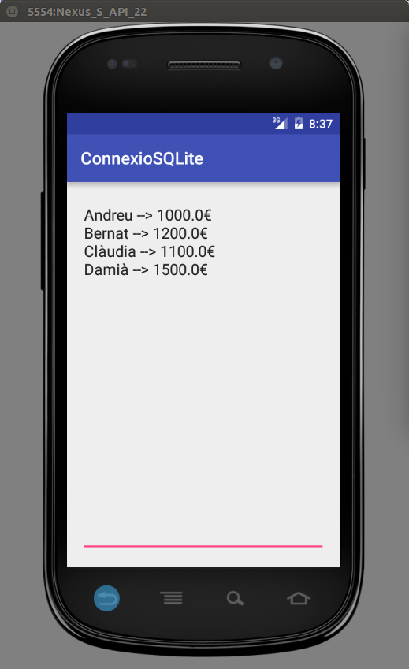

3.2 - Connexió local
Com comentàvem, la connexió local resulta ser un poc més complicada, a causa de que el driver JDBC per a SQLite no funciona en Android.
Hi ha per la xarxa un driver JDBC de SQLite per a Android anomenat SQLDroid, però el seu funcionament és inestable i en molts llocs no el recomanen.
El que està més recomanat per la xarxa per a utilitzar SQLite són unes classe noves, que estudiarem a continuació.
Per a poder practicar inicialment, ens crearem un nou projecte Android anomenat ConnexioSQLiteJava o ConnexioSQLiteKotlin, sobre el paquet com.example.connexiosqlitejava o com.example.connexiosqlitekotlin respectivament.
Posarem, com en exemples anteriors, únicament un EditText per agafar el contingut d'una determinada taula, o millor dit, consulta. El activity_main.xml quedarà així:
<?xml version="1.0" encoding="utf-8"?>
<androidx.constraintlayout.widget.ConstraintLayout xmlns:android="http://schemas.android.com/apk/res/android"
xmlns:app="http://schemas.android.com/apk/res-auto"
xmlns:tools="http://schemas.android.com/tools"
android:layout_width="match_parent"
android:layout_height="match_parent"
tools:context=".MainActivity">
<EditText
android:text=""
android:id="@+id/text"
android:layout_width="match_parent"
android:layout_height="match_parent"
android:inputType="textMultiLine"
android:gravity="top" />
</androidx.constraintlayout.widget.ConstraintLayout>
En el programa principal anirem col·locant totes les coses en el onCreate sense muntar cap thread ja que no accedirem a Internet. Però com comentàvem, hem de crear unes classes noves
Extends SQLiteOpenHelper
Ens haurem de crear una nova classe que herete (extends) de la classe SQLiteOpenHelper. Li podem posar per exemple el nom SQLiteGestor. En aquesta classe haurem d'implementar obligatòriament:
- El constructor. L'ajuda d'Android Studio ens el pot crear i no caldrà que el modifiquem
- El mètode onCreate. Normalment l'utilitzarem per a crear les taules de la Base de Dades, ja que només es crida quan es crea la Base de Dades. Si no posem res estarem obligats a "col·locar" nosaltres el fitxer corresponent a la Base de Dades
- El mètode onUpdate. Nosaltres ens aconformarem amb esborrar les taules i tornar a crear-les. En aplicacions més elaborades es podria guardar la informació en un històric, però per a nosaltres no valdrà la pena.
El millor que podem fer és que ens ajude Android Studio a crear el constructor i els 2 mètodes. Per tant, només amb posar que la nova classe és una extensió de SQLiteOpenHelper i deixant-nos ajudar, ens apareixerà el següent "esquelet".
JAVA
import android.content.Context;
import android.database.sqlite.SQLiteDatabase;
import android.database.sqlite.SQLiteOpenHelper;
import androidx.annotation.Nullable;
public class SQLiteGestor extends SQLiteOpenHelper {
public SQLiteGestor(@Nullable Context context, @Nullable String name, @Nullable SQLiteDatabase.CursorFactory factory, int version) {
super(context, name, factory, version);
}
@Override
public void onCreate(SQLiteDatabase db) {
}
@Override
public void onUpgrade(SQLiteDatabase db, int oldVersion, int newVersion) {
}
}KOTLIN
import android.content.Context
import android.database.sqlite.SQLiteDatabase
import android.database.sqlite.SQLiteOpenHelper
class SQLiteGestor( context: Context?, name: String?, factory: SQLiteDatabase.CursorFactory?, version: Int )
: SQLiteOpenHelper(context, name, factory, version) {
override fun onCreate(db: SQLiteDatabase) {
}
override fun onUpgrade(db: SQLiteDatabase, oldVersion: Int, newVersion: Int) {
}
}Com podem comprovar,tant en la versió Java com Kotlin, al constructor se li passen 4 paràmetres:
- Context: normalment serà el context de l'aplicació principal.
- Nom: és el nom de la base de dades. Si no posem la ruta, l'obrirà (o crearà) en el directori
/data/data/paquet_de_la_aplicacio/databases
- CursorFactory: per a fabricar algun cursor en aquest moment. Normalment el deixarem a null.
- Versió: per a detectar si és una nova versió de la Base de Dades (i així aplicar onUpgrade). Normalment el deixarem a 1.
I com veieu, amb aquestos paràmetres crida al constructor de SQLiteOpenHelper. Per tant el constructor el deixarem exactament com està.
El més habitual serà construir un objecte des del programa principal d'aquesta manera:
private SQLiteGestor bdg = new SQLiteGestor(this,"bd.sqlite",null,1);
Anem a aplicar açò al nostre exemple il·lustratiu, el projecte ConnexioSQLite (al final d'aquesta pregunta posarem el programa principal). En aquesta ocasió, en compte d'intentar copiar el fitxer Empleats.sqlite en el directori /data/data/com.example.connexiosqlite/databases, farem que es genere la taula EMPLEATS quan es cree la primera vegada. Aleshores ens aprofitarem del mètode onCreate. Li arriba un paràmetre que és justament la Base de Dades (SQLiteDatabase). Sobre ella executem sentències que no tornen dades amb el mètode execSQL(sentencia), que es veurà més avant. Així ens quedarà el mètode onCreate() de la classe SQLiteGestor. La versió en Java i en Kotlin queden idèntiques, canviant només els punts i coma del final
public void onCreate(SQLiteDatabase sqLiteDatabase) {
String sql = "CREATE TABLE EMPLEAT("
+ "num INTEGER CONSTRAINT cp_emp PRIMARY KEY, "
+ "nom TEXT, " + "depart INTEGER, " + "edat INTEGER, "
+ "sou REAL " + ")";
sqLiteDatabase.execSQL(sql);
sqLiteDatabase.execSQL("INSERT INTO EMPLEAT VALUES (1,'Andreu',10,32,1000.0)");
sqLiteDatabase.execSQL("INSERT INTO EMPLEAT VALUES (2,'Bernat',20,28,1200.0)");
sqLiteDatabase.execSQL("INSERT INTO EMPLEAT VALUES (3,'Clàudia',10,26,1100.0)");
sqLiteDatabase.execSQL("INSERT INTO EMPLEAT VALUES (4,'Damià',10,40,1500.0)");
}Ara la utilització des del programa principal serà:
private SQLiteGestor bdg = new SQLiteGestor(this,"Empleats.sqlite",null,1);
Però el programa principal l'escriurem després d'haver-ho vist tot.
SQLiteDatabase
Amb el helper que hem construït heretant de SQLiteOpenHelper, ja ens podrem definir un objecte de tipus Base de Dades SQLite, que és el que utilitzarem: SQLiteDatabase. Podrem fer-lo de 2 maneres:
- bdg.getReadableDatabase() obrim la Base de Dades només de lectura.
- bdg.getWritableDatabase() l'obrim en mode escriptura.
Ambdós tornen un objecte SQLiteDatabase. Per exemple:
SQLiteDatabase bd = bdg.getWritableDatabase();
Sobre aquest objecte SQLiteDatabase és on farem les operacions SQL. Distingirem, com en el cas de Java, entre les operacions que no tornen cap valor, sinó que serveixen per a modificar alguna taula (INSERT, DELETE, UPDATE, CREATE TABLE, ...) i les que sí que tornen un valor, millor dit un conjunt de valors (SELECT).
- execSQL: l'utilitzarem per a les que no tornen cap valor
- query: torna un cursor amb les dades. Es construeix posant com a paràmetres la taula, les columnes, condicions, ..., i així anirà construint la sentència SQL
- rawQuery: torna un cursor amb les dades. Com a paràmetre li posarem la sentència SQL i una possible llista de paràmetres (si no en posem el deixem a null)
Per exemple una sentència de creació de una taula molt senzilla seria:
bd.execSQL("CREATE TABLE T1 (C1 TEXT)");
I una d'inserció en la taula anterior:
bd.execSQL("INSERT INTO T1 VALUES('Hola')");
D'aquest tipus són les sentències que havíem posat en el onCreate() i onUpgrade() de la classe Helper que ens construïm, per a crear les taules.
És convenient tancar la Base de Dades quan s'acabe d'utilitzar.
bd.close();
Cursor
El resultat d'una sentència SELECT és un cursor. I més concretament estarà apuntant abans de tota l'estructura de dades tornada, és a dir, abans de la primera fila. Un cursor és pràcticament igual que un ResultSet dels que utilitzàvem en Java, només que els mètodes seran lleugerament diferents.
Inicialment està apuntant abans de la primera fila. Per a menejar-nos podem utilitzar el mètodes move:
- moveToFirst(): va al primer registre.
- moveToPrevious(): va a l'anterior.
- moveToNext(): va al següent.
- moveToLast(): va a l'últim.
- moveToPosition(int): va a la posició indicada. El primer registre és el 0.
Tots ells tornen true si ha pogut anar i false si no ha pogut anar. En el cas de moveToFirst() i moveToLast() només es pot produir false si no tenim res en el cursor.
Per a accedir a les dades de la fila activa, ho farem igual que en Java, utilitzant els mètodes getInt, getString, getFloat, getDouble, ... i posant com a paràmetre el número de la columna, tenint en compte que la primera columna és la columna 0, no com féiem en Java, que en els ResultSet la primera columna era la 1.
A banda d'aquestes també podem agafar més informació de les Meta Dades:
- getCount(): torna el número de files del cursor.
- getColumnCount(): torna el número de columnes en el cursor.
- getColumnName(int): torna el nom de la columna especificada (la primera és la 0).
- getType(int): torna el tipus de la columna especificada
Un exemple de sentència SELECT i utilització posterior del cursor, recorrent-lo en la seua totalitat seria:
Anem a finalitzar l'exemple ConnexioSQLite. En el programa principal, en el onCreate, ens definirem un objecte de la classe SQLiteGestor que extenia SQLiteOpenHelper. A partir d'ell ens crearem un objecte SQLiteDatabase, que en aquest cas és suficient amb que siga de lectura. Posteriorment accedirem a tota la taula EMPLEAT amb la sentència SELECT * FROM EMPLEAT, i ja només restarà recórrer el cursor per anar col·locant en el EditText, en aquest cas per a mostrar el nom i el sou dels empleats (camps segon i cinquè, per tant agafem el número 1 i 4).
JAVA
import androidx.appcompat.app.AppCompatActivity;
import android.os.Bundle;
import android.widget.EditText;
import android.database.sqlite.SQLiteDatabase;
import android.database.Cursor;
public class MainActivity extends AppCompatActivity {
@Override
protected void onCreate(Bundle savedInstanceState) {
super.onCreate(savedInstanceState);
setContentView(R.layout.activity_main);
EditText text = (EditText) findViewById(R.id.text);
SQLiteGestor bdg = new SQLiteGestor(this,"Empleats.sqlite",null,1);
SQLiteDatabase bd = bdg.getReadableDatabase();
Cursor rs = bd.rawQuery("SELECT * FROM EMPLEAT",null);
while (rs.moveToNext()){
text.setText(text.getText() + rs.getString(1) + " --> " + rs.getDouble(4) + "€\n");
}
rs.close();
bd.close();
bdg.close();
}
}KOTLIN
import androidx.appcompat.app.AppCompatActivity
import android.os.Bundle
import kotlinx.android.synthetic.main.activity_main.*
class MainActivity : AppCompatActivity() {
override fun onCreate(savedInstanceState: Bundle?) {
super.onCreate(savedInstanceState)
setContentView(R.layout.activity_main)
val bdg = SQLiteGestor(this, "Empleats.sqlite", null, 1)
val bd = bdg.readableDatabase
val rs = bd.rawQuery("SELECT * FROM EMPLEAT", null)
var cont =""
while (rs.moveToNext()) {
cont += rs.getString(1) + " --> " + rs.getDouble(4).toString() + "€\n"
}
text.setText(cont)
rs.close()
bd.close()
bdg.close()
}
}I el resultat seria aquest:

Llicenciat sota la Llicència Creative Commons Reconeixement NoComercial CompartirIgual 2.5